One Theme Set: six looks to pick
Six looks from the design review of the four themes, each a matter of taste rather than a bug: pick one per question, with a picture of every option.
debut -- Spell's public preview. Its phase P17, One Theme Set, building now, makes Spell,
Glass, Fruity and Merlot one set of themes that every page and the editor share.Every picture is a real screenshot of this checkout's pages, with the option's CSS added for the shot.
- Nothing is changed in the code yet: what you pick gets built in this phase.
- Each option's "How it's built" fold has the exact CSS.
- Click a picture to see it full size.
Two of your rules come up more than once:
- Rings round inner bits: "rounding of outer rings needs to be greater than rounding of inner bits". A box holding round things needs rounder corners than they have.
- Editor pictures: the editor in Debug, with every side bar open. The crops below come from shots taken that way.
In the Spell theme, Spell UI's docs pages show each example in a frame with 16px corners. The buttons inside are pills, about 20px round at their ends, so the inner shapes are rounder than the ring round them. Should the frames get rounder?
A short frame (the Button page's Emphasis examples)
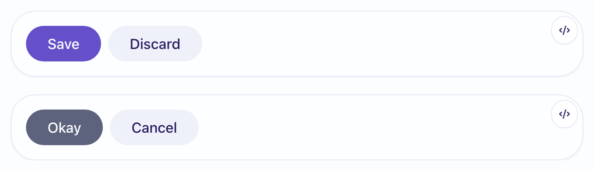
A tall frame (three rows of buttons)
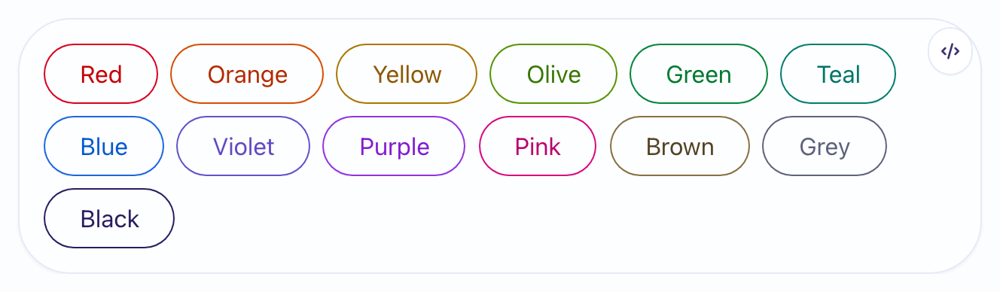
Recommended: rounder than the pills, so it keeps your rule, and still reads as a box on the tall frames. 28px is the Spell theme's own largest corner.
--ui-docs-example-frame-radius: var(--spell-radius-2xl); /* 28px */
The frame's corner follows the pill's curve, the gap between them even all round. The roundest; a tall frame starts to look like a capsule.
/* the pill's end (about 20px) plus the frame's padding (about 16px) */ --ui-docs-example-frame-radius: 35px;
Pills are Spell's look, and the frame stays a quiet box. Breaks your rule on every frame.
On a Spell UI docs page in Merlot, the page's header (its title and its tabs) sticks to the top as you scroll. It's white in light and a lighter plum in dark, so it stands apart from the page. In the other three themes it's the page's own background. Which should Merlot's be?
Light (the Button page, scrolled so the header is stuck)
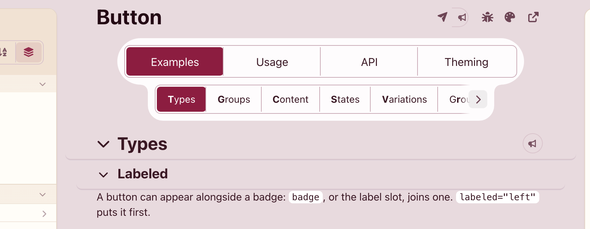
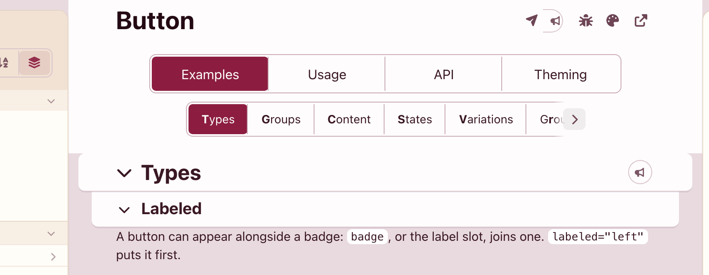
Dark
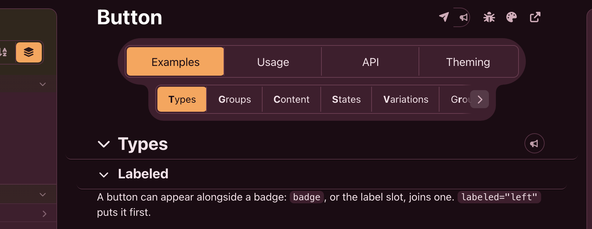
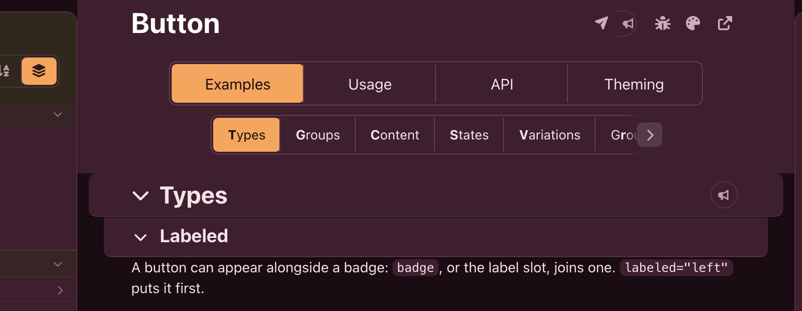
Recommended: the header melts into the page as it does in the other themes; the tabs keep a panel of their own behind them, so they still stand out.
- The stuck section titles ("Types", "Labeled") follow the same setting: they lose their panel fill too, and keep their rule underneath. Both pictures show it.
/* bars over scrolling content: the page's colour; the tabs' panel stays the panels' */ --ui-bar-background: var(--ui-background); --ui-bar-panel-background: var(--merlot-panel);
Today's: a clear band at the top, as Merlot's panels stand apart from its page. The one theme whose header looks different.
Merlot dark's accent (its "primary" colour) is amber. It marks what's selected: the current tab, the editor's mode, the theme menu's check. The epic pages mark what changed since you looked in orange, so on an epic page "selected" and "changed" look alike. Which accent should Merlot dark have?
An epic page's change mark (orange in every option: it doesn't change)
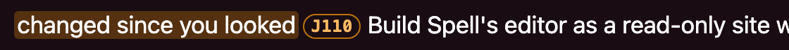
The epic page's top: the Epics tab, and the toolbar's first button pressed
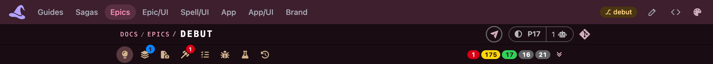
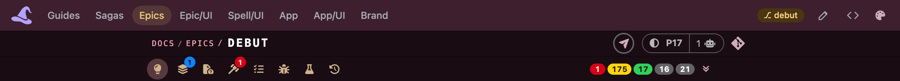
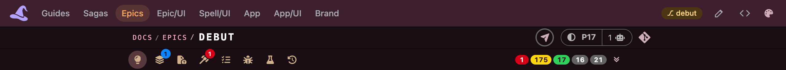
The theme menu's check
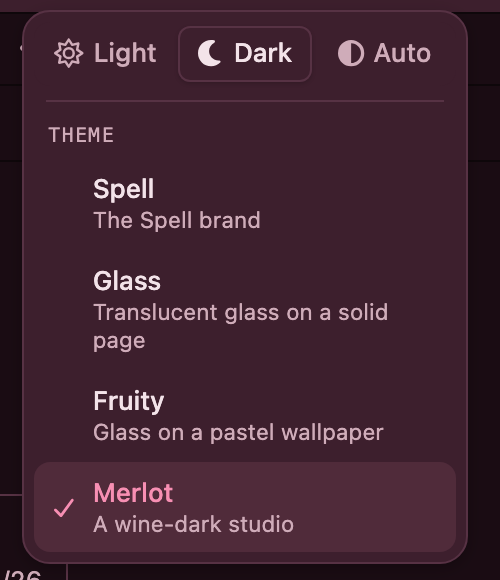
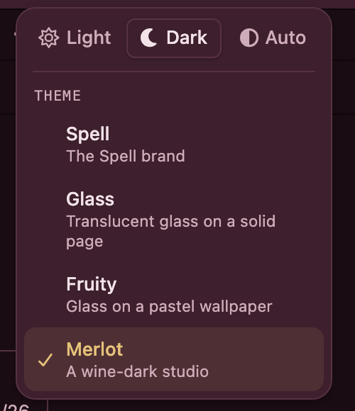
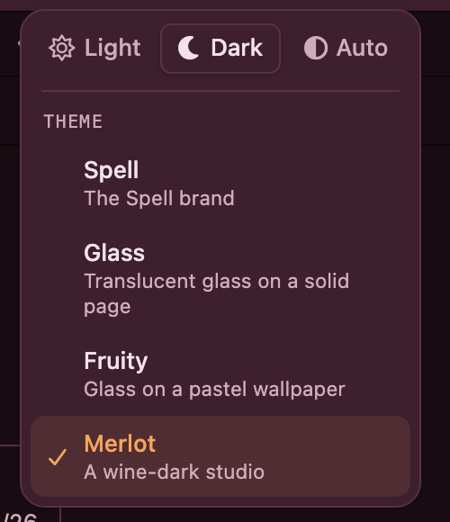
The editor: Run / Edit / Debug, the pressed buttons, Output, the picked card
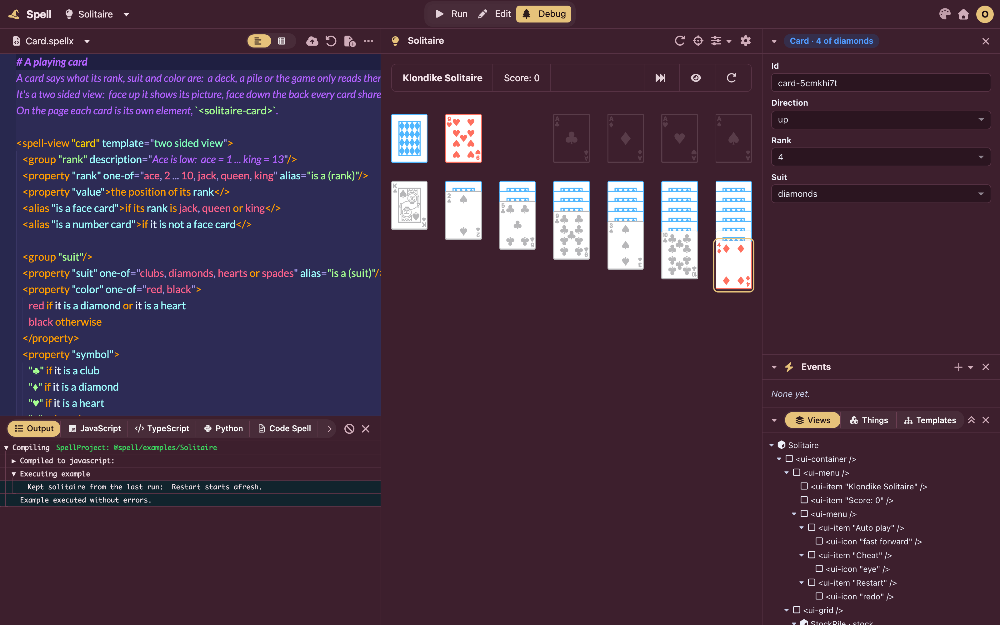
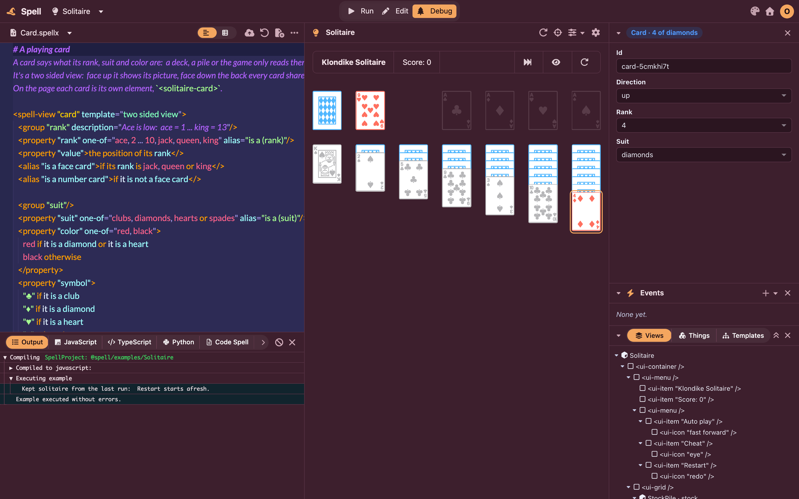
Recommended: Merlot's own colour family, next to its pink links, and clearly not orange, so the change marks stand alone. Light Merlot's maroon stays as it is.
- It sits close to the links' pink (#ffaec4), a little deeper: a selected tab and a link share a hue, though a tab is filled and a link is underlined.
--merlot-accent: light-dark(#8c1d40, #f78fb3); --merlot-accent-wash: light-dark(rgb(140 29 64 / 0.1), rgb(247 143 179 / 0.15));
A soft gold, yellower than the change marks' orange. Keeps Merlot dark's warm look; sits nearer the epic pages' yellow count badges.
--merlot-accent: light-dark(#8c1d40, #e6c27a); --merlot-accent-wash: light-dark(rgb(140 29 64 / 0.1), rgb(230 194 122 / 0.15));
Today's #f4a65f. On an epic page, the selected tab and a change mark stay the same orange.
In the editor, Merlot's code area keeps the code theme's own background (Shades of Purple: navy in dark, a pale lavender in light) inside Merlot's wine panels. Glass and Fruity let the panel show through behind the code instead. Should Merlot do the same? The code's colours stay Purple's either way.
Dark (the editor in Debug, cropped to the code and the app)
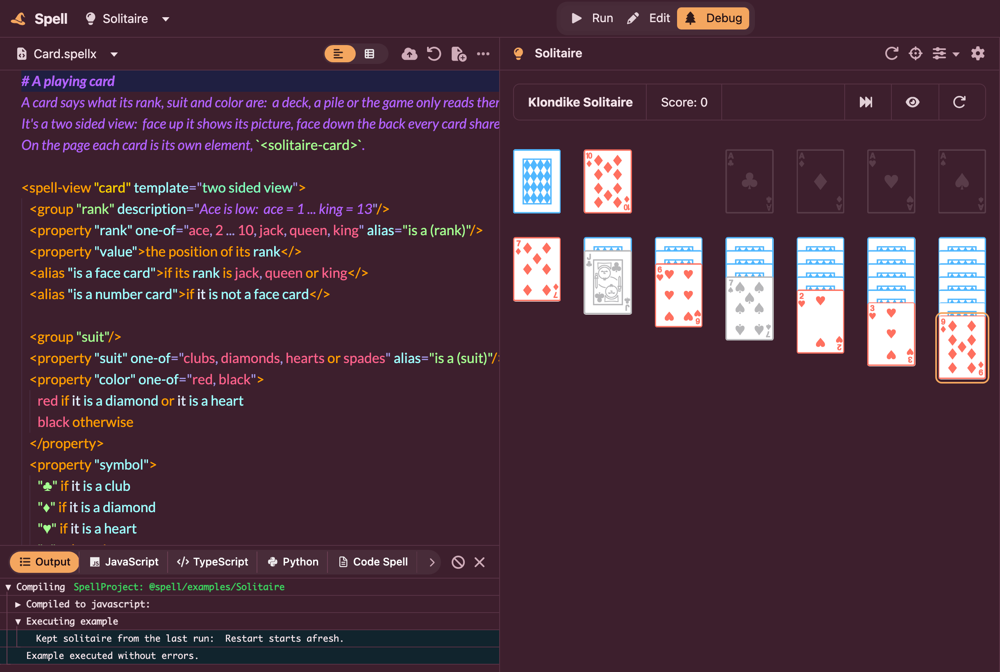
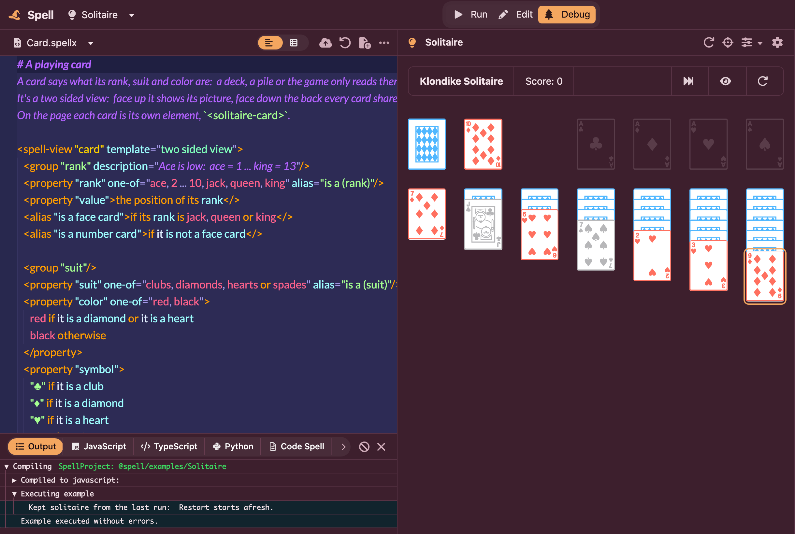
Light (nearly the same either way: Purple's lavender and Merlot's panel are both near-white)
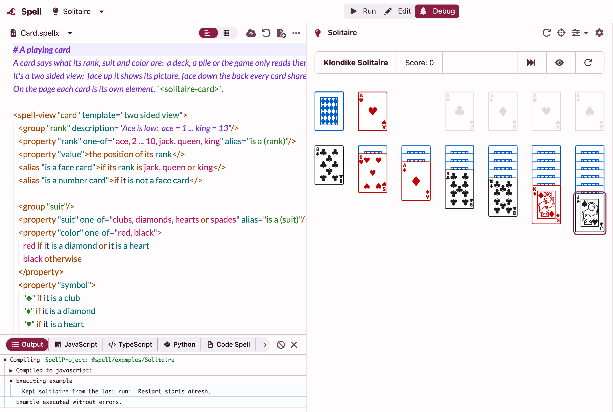
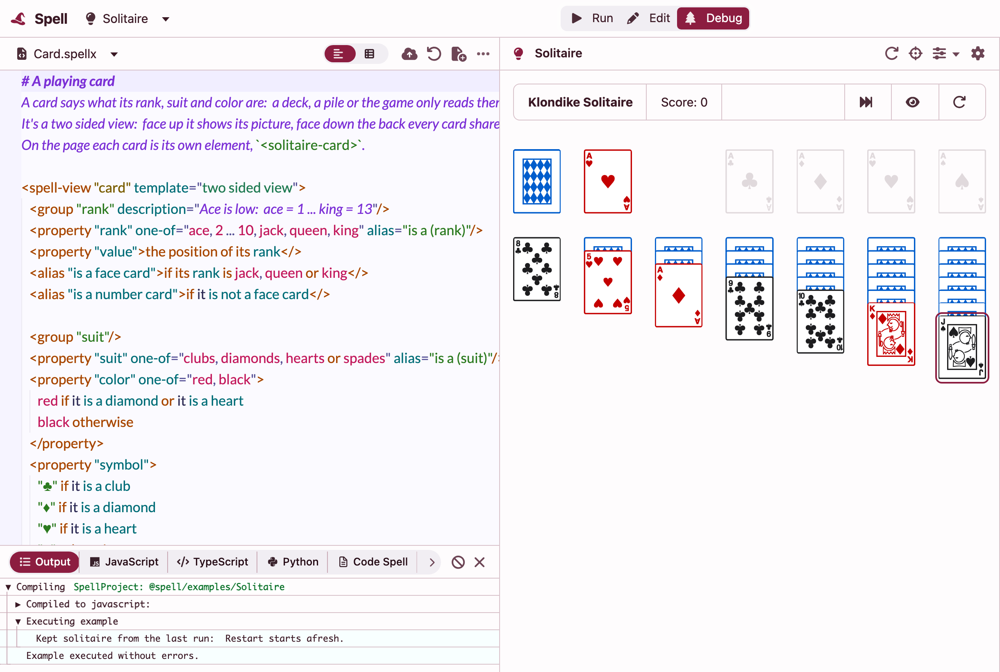
Recommended: in dark the navy block goes, and the code sits on the same wine as the rest of the editor. The code's colours don't change.
- The lines stuck at the top while you scroll (the "# A playing card" heading) keep Purple's background, as in Glass and Fruity, so the code scrolls under them.
- Merlot's sheet says today the code stays Purple on purpose: this keeps its colours Purple, and only drops the background.
:root:is([data-spell-theme="glass"], [data-spell-theme="fruity"], [data-spell-theme="merlot"]) .monaco-editor {
--vscode-editor-background: transparent;
--vscode-editorGutter-background: transparent;
--vscode-editorStickyScroll-background: light-dark(#fbfaff, #2d2b55);
}
Today's: the code reads as Shades of Purple dropped into a wine frame, a navy block in dark.
In Glass and Fruity, the editor's top bar is a floating box with 14px corners. At its right end sits your round avatar, 28px across and 9px from the bar's top: the avatar is rounder than the bar's corner round it. What shape should the bar have?
Fruity (each end of the bar)
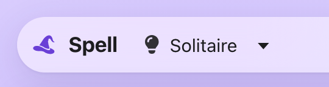
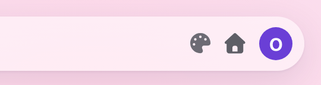
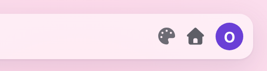
Glass
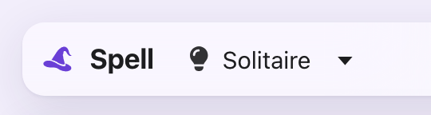
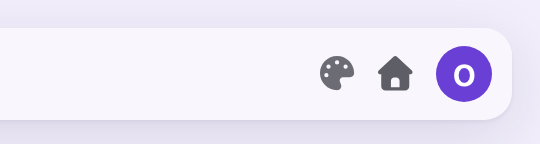
Recommended: the bar's ends follow the avatar's curve, and stay a pill whatever height the bar takes.
--spell-bar-radius: 999px;
The avatar's 14px plus its 9px gap from the edge. The bar is 46px tall, so 23px is already a full pill: today it draws exactly as A. It would differ only if the bar grew taller.
--spell-bar-radius: 23px;
Today's: the bar matches the panels' corners below it. Breaks your rule round the avatar.
On a phone, the editor's Debug shows the code, its output and the app, one under another. It has no Inspector (the panel that shows a picked part's properties, its events and the app's views): its button and its crosshairs are hidden. Should a phone get it?
390 wide, in Debug. A and B are quick mock-ups: the real Inspector, a card picked, laid out by added CSS.
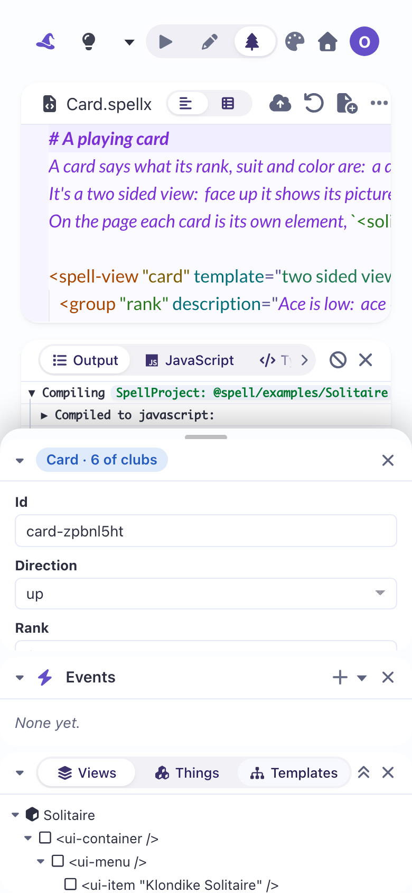
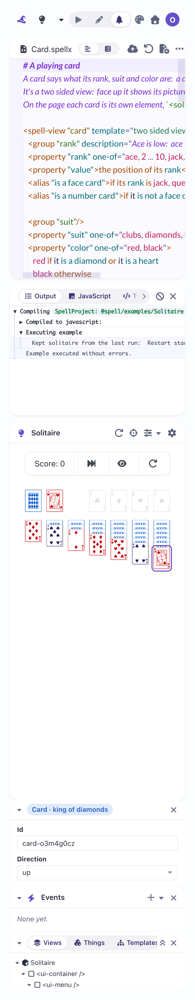
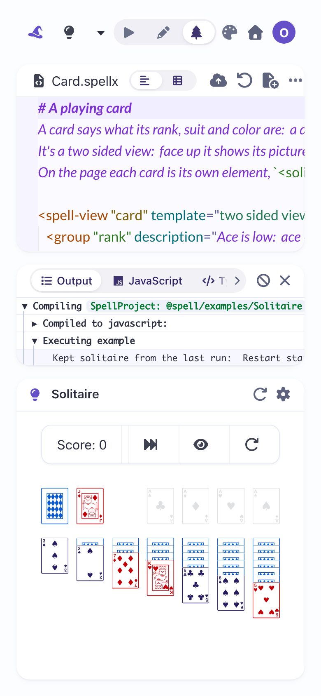
Recommended: the crosshairs show in the app's header; pick a part and a sheet slides up from the bottom with its properties. Swipe it down to close. The app keeps its full size until you pick.
- While the sheet is open it covers the lower half, the app included.
- The most work of the three: a sheet, its handle, and swiping it closed.
- The mock-up is the desktop Inspector pinned to the bottom with rounded top corners and a handle, nothing more.
The Inspector stacks under the app, as the other panes do; the page scrolls to reach it. Little work, but you scroll away from the app to read what you picked.
- Kept to the screen's height instead (no scrolling), the four panes squeeze: the app gets about a sixth of the screen.
Today's: on a phone you run and read the code; inspecting stays a desktop thing.